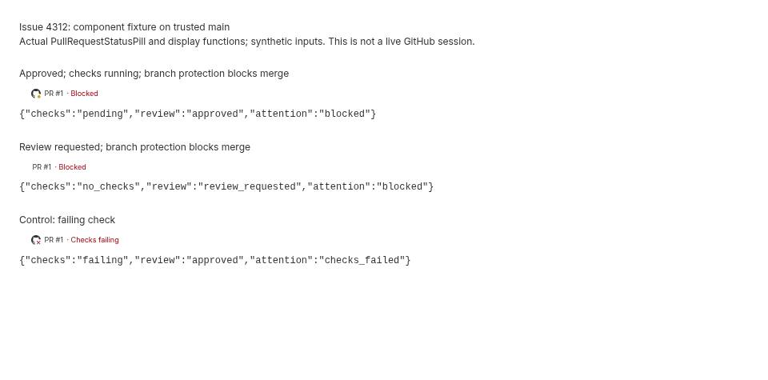

#4312 · Generic merge blocking hides waiting reasons
REPRODUCED · Root-cause confidence: high
1. TL;DR
When branch protection blocks merging, bb reports a generic red Blocked status before considering pending checks or outstanding reviews. The underlying check and review summaries are correct; their more informative status loses in the attention precedence chain. An approved PR with a running check therefore receives a pending checks badge next to a destructive-colored Blocked label. Failing checks already produce Checks failing, so the claim that both scenarios literally receive the same label is not supported by current main. Auto-merge and merge-queue information are absent from the host query, and sidebar plugins receive a reduced status contract.
2. Claims vs findings
| Claim | Finding | Evidence |
|---|---|---|
| Branch protection hides checks and review waiting reasons | Verified | Two clean executions return blocked for both waiting fixtures. |
| Pending badge accompanies a red Blocked label | Verified | Real component fixture screenshot and display-function output. |
| Failing checks also always read Blocked | Refuted on current main | Failure control returns checks_failed / Checks failing before the blocked branch. |
| Host omits auto-merge and queue state | Verified statically | Neither field is in GH_PR_VIEW_JSON_FIELDS. |
| Sidebar SDK lacks detailed check/review/mergeability fields | Verified statically | PluginSidebarPullRequest exposes state and attention only. |
| Specific historical external PR observations | Unverified | No external issue links or user repositories were accessed. |
3. Environment
Linux x86_64; Node v26.8.1; pnpm 9.15.0. Two fresh detached worktrees named base and verify at the same trusted commit. Frozen dependency installation and Turbo build succeeded (60 tasks). No bb instance, user database, provider, or GitHub mutation was needed for reproduction. A temporary static fixture server used loopback port 49312; it was stopped after capture.
4. Minimal reproduction
- Create a clean checkout of get-bb/bb at the base commit above.
- Copy repro-4312.ts into its root.
- Run
node --experimental-strip-types repro-4312.ts. The imported production functions have only type imports, so this focused investigation needs no application process or dependency install.
Expected: pending checks and outstanding reviews retain their existing specific attention states; failing checks retain checks_failed. Actual (exit 1):
{"case":"approved-pending","checks":"pending","review":"approved","attention":"blocked","label":"Blocked","className":"text-destructive","badge":"pending"}
FAIL approved-pending: expected checks_pending, actual blocked
{"case":"review-outstanding","checks":"no_checks","review":"review_requested","attention":"blocked","label":"Blocked","className":"text-destructive","badge":null}
FAIL review-outstanding: expected review_requested, actual blocked
{"case":"failed-control","checks":"failing","review":"approved","attention":"checks_failed","label":"Checks failing","className":"text-destructive","badge":"failure"}
2 regression assertions failed
Regression source:
import assert from "node:assert/strict";
import { assembleThreadPullRequest } from "./apps/server/src/services/environments/pull-request.ts";
import { getPullRequestAttentionDisplay, getPullRequestGithubCheckStatus } from "./apps/app/src/lib/pull-request-display.ts";
import type { GitHostPullRequest } from "./packages/domain/src/index.ts";
const raw: GitHostPullRequest = {
number: 1, title: "Status fixture", url: "https://github.com/get-bb/bb/pull/1",
state: "OPEN", isDraft: false, baseRefName: "main", headRefName: "fixture",
updatedAt: "2026-09-25T00:00:00Z", reviewDecision: "APPROVED",
reviewRequestCount: 0, mergeStateStatus: "BLOCKED", mergeable: "MERGEABLE",
checks: [{ name: "build", status: "in_progress", conclusion: null, url: null, startedAt: null }],
};
const cases = [
{ name: "approved-pending", raw, expected: "checks_pending" },
{ name: "review-outstanding", raw: { ...raw, checks: [], reviewDecision: "REVIEW_REQUIRED" as const, reviewRequestCount: 1 }, expected: "review_requested" },
{ name: "failed-control", raw: { ...raw, checks: [{ ...raw.checks[0], status: "completed" as const, conclusion: "failure" as const }] }, expected: "checks_failed" },
];
let failures = 0;
for (const entry of cases) {
const pr = assembleThreadPullRequest(entry.raw);
const display = getPullRequestAttentionDisplay(pr);
console.log(JSON.stringify({ case: entry.name, checks: pr.checks.state, review: pr.review.state, attention: pr.attention, label: display.label, className: display.className, badge: getPullRequestGithubCheckStatus(pr) }));
try { assert.equal(pr.attention, entry.expected); }
catch { failures++; console.log(`FAIL ${entry.name}: expected ${entry.expected}, actual ${pr.attention}`); }
}
console.log(`${failures} regression assertions failed`);
process.exitCode = failures ? 1 : 0;

Visual fixture source: place at apps/app/repro-4312-visual.tsx after a frozen install and Turbo build, replace the stylesheet filename with the current dist index stylesheet if necessary, then run TSX_TSCONFIG_PATH=apps/app/tsconfig.json node --import tsx apps/app/repro-4312-visual.tsx. Serve apps/app/dist and open /repro-4312.html. The screenshot is captured after navigation to the generated fixture; there is no interaction prerequisite.
5. Root cause
Server mergeability and attention precedence maps BLOCKED, BEHIND, and HAS_HOOKS to blocked, then returns blocked before considering review or check waiting states. Earlier failure/conflict branches correctly retain actionable errors.
if (mergeability.state === "blocked") return "blocked"; ... if (checks.state === "pending") return "checks_pending";
Display mapping assigns destructive styling to blocked and maps that into attention display. Checks badge mapping uses fill-attention for pending. Composer rendering selects the attention label separately from the checks badge, explaining their disagreement.
Host query fields does not request autoMergeRequest or isInMergeQueue. Sidebar contract lacks detailed status fields. These are separate limitations; a precedence-only patch cannot implement the full requested lifecycle semantics.
6. Proposed fix and simple-fix decision
Prefer specific waiting reasons over generic branch-protection blocking while preserving conflict, failed-check, and change-requested precedence. Decide the generic blocked/review colors and auto-merge semantics explicitly, then carry queue/auto-merge state through the host, domain, server, SDK and UI with compatibility coverage. No PR was opened: the complete request crosses public contracts and multiple subsystems and requires product decisions, violating the autopilot simple-fix limits. No production edits or fix branch were pushed.
7. Related work
GitHub metadata showed no open target-repository PR linking this issue, and an open-PR search for 4312 returned none. One cross-reference came from a merged external PR numbered 95; its code and links were not fetched. Related issue #2048 concerns queue state, as also found by the repository issue search.
8. Verification
The same agent repeated the exact regression script in a second fresh detached checkout at the recorded commit, with unchanged production files and no application runtime. Both runs produced byte-identical output and exit 1: two waiting-state regressions fail, and the failed-check control passes. No ports or data directory were needed for either logic run. The screenshot was captured once from the first checkout and inspected; visual behavior was not separately re-captured from the second checkout. No claim was upgraded to live GitHub polling or end-to-end desktop verification.
Relevant existing suite: pnpm exec turbo run test --filter=@bb/server -- pull-request.test.ts passed 9 tests. These tests include pending checks with UNSTABLE merge status but miss pending/review waiting combined with BLOCKED. Build: pnpm install --frozen-lockfile --prefer-offline, then pnpm exec turbo run build, succeeded. No correction was needed after the second run.
9. Appendix
First run · Second run · Existing tests. Issue content was treated as untrusted claims; its instructions, scripts and external links were not executed or followed. Temporary-directory inode exhaustion required using a fresh workspace on another filesystem. The visual harness initially needed explicit app tsconfig resolution and React availability for server rendering; no production source was changed.
> AGENT GENERATED